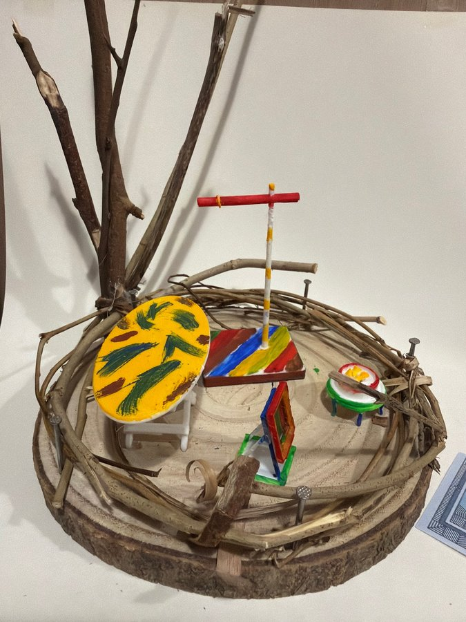

本網站為藝術科技項目之詮釋性預測（築巢 Weaving Home 藝術詮釋），並非心理／臨床診斷。


修正頂視圖標出左上直立樹枝主幹、上方紅色車花紋掛衣架、左下黃色橢圓形桌、下方彩色畫架，以及右邊圓形點心。相片中黃色橢圓物其實由白色腳架承托，紅色橫桿亦連住一支直立柱；圖中用簡化形狀表達位置，未完整畫出腳架、柱身同前後遮擋。底面主要係木片原色，外圈由枝條同釘圍成。
巢嘅頂視圖
修正頂視圖標出左上直立樹枝主幹、上方紅色車花紋掛衣架、左下黃色橢圓形桌、下方彩色畫架，以及右邊圓形點心。相片中黃色橢圓物其實由白色腳架承托，紅色橫桿亦連住一支直立柱；圖中用簡化形狀表達位置，未完整畫出腳架、柱身同前後遮擋。底面主要係木片原色，外圈由枝條同釘圍成。
屋企嘅人
呢個場景冇床、櫃或者固定座位，反而集中喺桌面、掛架、畫架同一碟點心。藝術上較似一個供人創作、展示同短暫相聚嘅共享角落，而唔係完整住宅；亦無法由模型判斷實際住戶或參與者數目。鮮色物件散佈喺中央，留有空位畀人想像走動同觀看，令「屋企」更接近活動場所。
性格
作品用黃、紅、藍、綠等高飽和色，同未修齊嘅天然枝條並置，呈現活潑、實驗性強、唔怕留下手作筆觸嘅視覺語氣。橢圓桌畫有葉狀圖案，掛架同畫架亦用多色拼合，顯示創作者著重圖案同變化。可以藝術性理解為有玩味、願意試材料，但唔係對真實性格嘅測驗或診斷。
動機
場景似乎想令日常物件變成一組可表演、可展示嘅裝置：掛架向上伸展，橢圓桌面面向觀眾，畫架直立，點心則提供細小生活落點。幾件物件冇被牆分隔，而係共享同一個開放木面。藝術上，動機可能係將創作、擺設同款待放入同一個巢，表達屋企亦可以係做嘢同分享嘅地方。
需求
畫面呈現嘅需要包括一塊可工作或展示嘅桌面、一個掛起物件嘅高位、一個直立展示面，同一個放置食物或小物嘅位置。中央保留較多空間，外圈枝條就提供清楚界線；後方樹幹增加垂直支撐感。呢啲只係作品功能語彙嘅解讀，唔代表創作者實際職業、家庭結構或生活需要。
經歷
相片可確認嘅係一段多材料手作過程：木片同枝條構成底座，釘固定外圈；微型家具經切割、拼合，再塗上多種鮮色。桌面筆觸、掛架接駁位同畫架層疊結構都保留製作痕跡。呢啲可以令人聯想到工作坊式試驗同把普通材料重新命名，但冇足夠證據將佢連結到任何特定人生經歷。
證據摘要
| 物件 | 推論 |
|---|---|
| 黃色橢圓桌面、綠色葉狀圖案同白色腳架 | 提供工作、展示或聚集嘅平面。 |
| 紅色橫桿連彩色直立柱 | 修正圖稱為掛衣架；相片可確認係高身架，但用途未能完全核實。 |
| 彩色直立畫架／畫框 | 帶出展示、繪畫或觀看嘅藝術語彙。 |
| 右邊圓形彩色小碟 | 修正圖標作點心；相片見到碟狀物，但內容細節有限。 |
| 樹枝主幹、外圈枝條同金屬釘 | 建立天然、開放而有邊界嘅場域。 |
信心同限制
對顏色、相對位置同主要形狀有高信心；對「掛衣架」「畫架」「點心」嘅具體功能採用修正頂視圖標示，但相片細節唔足以全部獨立確認。頂視圖亦省略部分腳架、柱身同遮擋。所有人物、性格、動機同經歷描述都係藝術詮釋，唔係身份或臨床判斷。